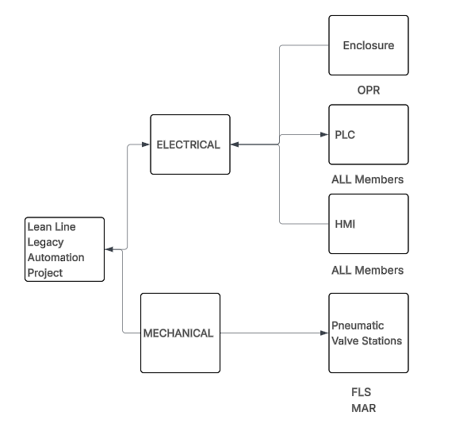
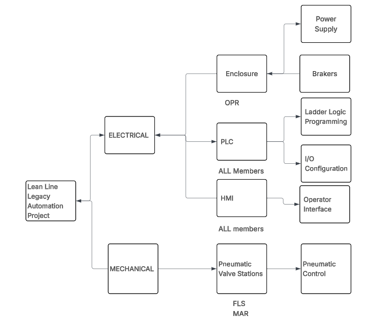
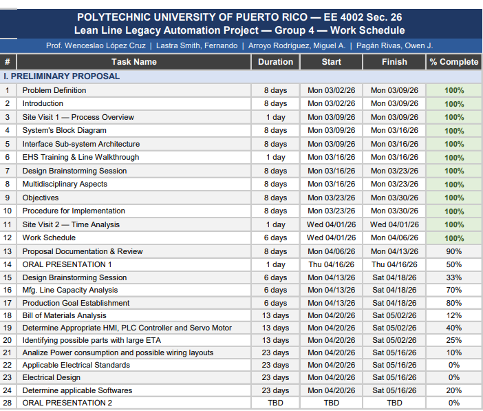

Resumen
Propuesta preliminar, presentada el 16 de abril de 2026. Respondió a la pregunta ¿qué problema vamos a resolver y cómo planeamos hacerlo?
1.1 Definición del problema
Retos actuales
- Alta dependencia de mano de obra entre turnos.
- Calidad de producto inconsistente.
- Alto riesgo de error humano.
Solución propuesta
- Diseñar e implementar un sistema de ensamble semiautomatizado.
- Atiende las operaciones manuales de stylets, body knobs y caps.
- Reduce los operadores de 3 a 1–2 con la misma producción.
1.2 Introducción
Presenta el producto (el stylet para implantación de leads de marcapasos), el proceso actual (estampado, inserción, colocación del cap y prensado) y la oportunidad de automatizar. Ver El proyecto para el detalle.
1.3 Diagrama de bloques
El sistema se divide en una parte eléctrica (enclosure, PLC y HMI) y una parte mecánica (estaciones de válvulas neumáticas).

1.4 Arquitectura de interfaces
Detalla cómo se conectan los subsistemas: fuente de poder, breakers, enclosure, programación de lógica, configuración de I/O, interfaz del operador y control neumático.

1.5 Aspectos multidisciplinarios
Ingeniería eléctrica
- Programación de PLC y configuración de I/O
- Cableado de sensores y acondicionamiento de señal
- Diseño del circuito de seguridad
- Layout del panel de control
Ingeniería mecánica
- Dimensionamiento y selección de cilindros neumáticos
- Diseño de fixtures y herramental
- Análisis de fuerza de press-fit
Software
- SolidWorks
- AutoCAD
- Microsoft Office
1.6 Objetivos
Investigación y análisis
- Analizar los procesos actuales de la línea lean y su factibilidad.
- Reunir datos de eficiencia, rendimiento y calidad.
- Estudiar a fondo el proceso de estampado.
- Recorrer líneas adyacentes para recoger ideas.
- Evaluar componentes para el diseño futuro.
Diseño y entregables
- Definir el alcance del sistema de automatización.
- Determinar qué etapas de producción automatizar.
- Seleccionar componentes dentro del tiempo y presupuesto.
- Simular el diseño para prevenir errores.
- Entregar la presentación final y la documentación As-Built.
1.7 Procedimiento de implementación
- Investigar la operación de los sistemas manuales de ensamble de stylets en la línea de Heraeus Medevio.
- Buscar información sobre equipos y tecnologías de automatización aplicables al proceso.
- Estudiar la eficiencia de los componentes de automatización considerados para el diseño.
1.8 Cronograma
